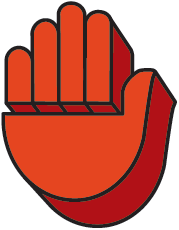

Taki History
@elna_alp טאקי #טאקי #נקניקחושים #דניאל_יונה⚽️🕊 #פוריו #פוריוישראל #פוריועולמי ♬ צליל מקורי - אלנתן • Elnatan
Taki, a popular card game designed by Haim Shafir, has an intriguing history that dates back to its introduction in 1983. Inspired by the classic card game "Crazy Eights" (known as "Uno" in the USA), Taki offers a fresh twist and strategic elements, captivating players worldwide. With its roots in Israel, the game quickly gained popularity not only in its home country but also in numerous other nations.
The name "Taki" holds significance, combining Japanese words for "waterfall" and a special card that grants players the ability to place all cards of a specific color on it. This unique aspect adds an exciting dynamic to the gameplay, encouraging players to strategize and plan their moves carefully.The visually appealing card designs for Taki are credited to Arye Ron, while the illustrations are the creative work of Yah Pluta. Interestingly, the inspiration for these artistic elements came from a Japanese assistant who noticed the resemblance of the card layout to a cascading waterfall, adding a delightful touch to the overall aesthetic.
Throughout its existence, Taki has undergone updates with the introduction of new rules and special cards. These updates have kept the game fresh and engaging, catering to players of all ages. Haim Shafir, the mastermind behind Taki, has a dedicated vision of creating games with well-designed rules that promote an enjoyable gaming experience, particularly for children.
The objective of Taki remains constant: players strive to discard their cards by matching colors, numbers, or symbols. Players must remember to audibly announce "Taki" when they have only one card left, lest they be penalized with drawing two additional cards. This element adds an element of suspense and excitement to the gameplay.
Taki's cultural significance in Israeli gaming circles is immense, and it stands as one of Haim Shafir's most celebrated creations. The game's influence and appeal have been far-reaching, captivating players in various countries worldwide.
One notable milestone in Taki's journey was the release of a special edition in 2008. The festive tin packaging commemorated the game's 25th anniversary, coinciding with Israel's 60th Independence Day, marking a momentous occasion in the game's history.
Beyond its entertaining qualities, Taki has also fostered social interactions, bringing friends and families together around the gaming table. The strategic elements and the element of surprise in the gameplay keep players coming back for more, making Taki a staple in many households and social gatherings.
As Taki's legacy lives on, Haim Shafir's dedication to creating enjoyable gaming experiences, especially for children, continues to inspire game designers around the world. With its intriguing history, meaningful name, and enduring appeal, Taki remains a shining gem in the realm of card games, leaving a lasting impact on the hearts of players worldwide for years to come
Game Instructions
Playing with
2 to 10 participants aged 5 and above
Game Contents
116 cards (2 identical sets of 58). Card distribution: All numbers (2 of each color), Change Direction, Stop, Plus, Taki (2 of each color), SuperTaki, King, +3 and +3 Breaker (2 of each), Change Color (4).
Gameplay
Each player must follow the top card of the discard pile with a card of the same color or figure. Action cards can change the direction of play, skip a player's turn, force other players to draw cards, change the color or allow a player to discard more than one card.
The Object of the Game
To get rid of all the cards in your hand.
How to Play the Game?
Shuffle all the cards and deal 8 cards to each player.
Put the remainder of the deck in the center. This is the draw pile.
Turn over the top card of the draw pile and place it face-up next to the draw pile, to form the discard pile.
The top card of the discard pile is called the Leading Card.
The youngest player goes first. Each player, in turn (going clockwise),
plays a card (or cards) by placing it over the leading card, in one of the following ways:
- By matching its color.
- By matching its number or figure.
- By playing a valid Action Card (see Action Cards below).
A player who cannot play any of his cards must draw a card from the draw pile and may only use it on the next round.
A player who is left with a single card in his hand must announce "last card!"
If he fails to do so before the next player makes his move, he must draw 4 cards from the
draw pile.
The game ends when a player discards his last card.
Action Cards
The cards that are not regular number cards are called Action Cards. An Action Card can affect the player who uses it, the next player or all the players. These cards are the heart of the game and using them wisely is the key to winning.
|  | Stop - The next player loses his turn. |
| +2 - Forces the next player to draw 2 cards or play another +2, forcing the next player to draw 4 cards or follow with a +2 as well, etc. The first player who cannot follow with a +2 must draw 2 cards for every
+2 card that was played.
After collecting the cards, the +2 is no longer active and the next player should treat it as a regular number card. |
|
| Change Direction - Reverses the direction of play. | |
| Change Color - Allows the user to determine the color to be played by the next player. This card can be played at any time, except after the cards +2 and +3 which are still active. | |
| TAKI - Playing a TAKI card allows the player to follow it with all his cards of the same color as the TAKI. Important: a TAKI card must be closed after playing the last card by declaring "Closed TAKI!" If the player does not close the TAKI, it is considered an "Open TAKI" and the next player may use it to get rid of all his cards of that color. The TAKI remains open until one of the players who used it declares "Closed TAKI" or until a card of a different color is played. |
|
| Super Taki - A wild TAKI which automatically receives the color of the Leading Card. It does not change the color of the Leading Card. You may play the SuperTaki card on any card except on a +2 and +3 which are still active. | |
| King - Cancels the need to obey the Leading Card, including any action it may prescribe, and grants the player another free turn, in which he is free to play any card he chooses. A king may be played on any card! | |
| +3 - Forces all the other players to draw 3 cards from the draw pile. You may play a +3 card on any card. You may not ‘hide’ the +3 card inside a Taki run. | |
| +3 Breaker - When played on a +3 card it cancels its action and the one who played the +3 must take 3 cards himself. When can you play a +3 Breaker?
|
End of the Game:
The first player to get rid of all his cards is the winner.
TAKI Pyramid Tournament
To win the Taki Pyramid Tournament, a player must complete all 8 stages of the Pyramid.
Deal 8 cards to each player. All players are now at Stage 8. When a player discards all his cards, he advances to Stage 7. He draws 7 cards and the game continues.
A player who discards his last card in Stage 7, continues to Stage 6, draws 6 cards, and so on.
The winner is the first player to discard his last card in Stage 1.
Tips
Taki, a widely enjoyed card game, demands a combination of tactical acumen, prudent strategizing, and a sprinkle of good fortune. Enhancing your Taki prowess necessitates a comprehensive understanding of the game's fundamentals. Mindfully acknowledging the significance of colors is crucial since adhering to the color of the preceding card is the primary rule, unless you encounter one of the game's exceptional cards, such as Taki, Super Taki, or Change Color.
Adroitly employing these special cards can prove to be game-changing. For instance, the Taki card allows you to adroitly change the color of play, thereby elongating your turn when you possess an abundance of cards of a specific hue. Conversely, reserving Super Taki cards for pivotal moments grants you the ability to manipulate the color multiple times in succession, providing a tactical advantage. The coveted Change Color card is the ultimate wildcard, allowing you to decide the color to be played next, a potential game-changer indeed.
Beyond the mechanics, it is prudent to refrain from amassing a high number of cards in your hand. Doing so can severely limit your choices, leaving you at a disadvantage. To mitigate this, capitalize on Taki and Super Taki cards to divest yourself of surplus cards and maintain a lean hand.
Additionally, honing your observational skills is essential in Taki. Vigilantly monitoring the actions of your adversaries enables you to anticipate their potential moves and strategize accordingly. Incorporating calculated bluffs and deceptive plays can sow confusion among opponents, disrupting their plans and potentially securing an upper hand.
Special action cards, such as Stop and Plus, possess distinctive powers that can wield substantial influence over the game's dynamics. Employing these cards strategically, you can halt an opponent's turn or burden the next player with additional cards, offering a tactical advantage.
As the game progresses, it proves advantageous to keep track of the cards that have been played. Such astute observation facilitates better predictions regarding your opponents' holdings and increases your awareness of the probability of specific colors emerging.
A composed and patient demeanor is a virtue in the fast-paced environment of Taki. Refraining from hasty decisions allows you to analyze the current situation, weigh your options, and devise more effective strategies.
Remember, mastery of Taki comes through practice and experience. Engaging in regular gameplay with friends or on digital platforms can sharpen your skills and transform you into a shrewd and adept Taki player.
Ultimately, Taki blends elements of skill and chance, rendering each game an exciting and unpredictable venture. Embrace the journey, relish the process, and delight in the enthralling world of Taki!